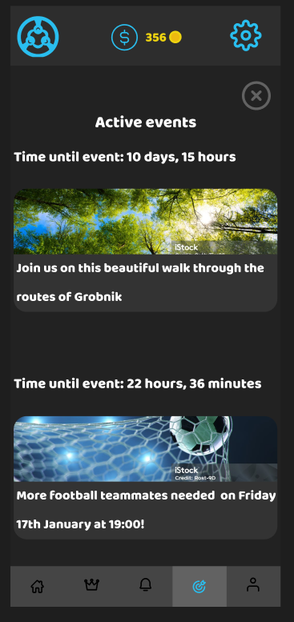

MoveUs Tasks UI
During the creation of our application MoveUs we found the need to create a UI design that we can rely on while the app was in development. While the Figma prototype features many different screens and options the screen for users tasks is sigificant as it features most of the app gamification property. The user can complete their tasks by participating in events and earn in-game rewards.

The screen consists of three weekly tasks that the user can complete if they want to obtain rewards such as coins that can be used in the shop to purchase items. In the Figma prototype the user
can also select the option to view their active events. In the active events screen the user can see what events they joined as well as when that event is going to happen. The events are interactable and can
be clicked if the user wants to go back to the event overview in case they want to cancel their participation.
Said features and UI can change based on the collective opinion of the team.
